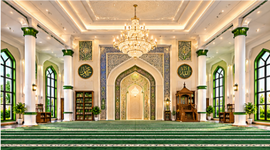

Worship
A shared place for daily prayers, Jummah and remembrance of Allah.
A place of worship, learning and togetherness in Ethungahakotuwa. Discover our masjid, its purpose and the community it serves.

Al-Masjidul Hasaniyya Jummah Mosque serves the Muslim community of Ethungahakotuwa and surrounding areas. It is a place to come together for salah, strengthen our knowledge and support one another.
Learn about our masjid →Our masjid is more than a prayer space — it is a centre for worship, learning and caring for the community.
A shared place for daily prayers, Jummah and remembrance of Allah.
Encouraging Qur’anic learning, religious guidance and the growth of faith.
Building unity, compassion and service among families and neighbours.
“The mosques of Allah are only to be maintained by those who believe in Allah and the Last Day.”Qur’an · At-Tawbah 9:18